自己紹介ポートフォリオ
自己紹介
長所:真面目ひたむきな努力家
短所:長所が故の諦めの悪さ
趣味:音楽鑑賞･ゲーム
肉体労働･接客業の経験あり
黙々と実行出来る作業が好き?
何よりもお茶が大好き
ケーキ食べ放題にも行きます
大手のサイト三井住友銀行になります
今の僕の現状の技術で何処まで作れるかの挑戦を致しました。
作っていて全てがかなり細かく作られておりかなり大変でした。
大手企業サイトのホームページの作りこみのレベルを感じさせられました。
ドロップダウンメニューの作成に挑戦致しましたが出来ませんでした。
タブパネルの作成に挑戦しどうにか作成が出来ました。
またこの作品の大元の画像の形式がWEBP(ウェッパー)であり普通には使えないのでフォトショップにプラグインを導入してWEBPを読み込み使える状態にしました。
フォトショップの切り抜き作業の勉強の為WEBPをそのまま使う事は敢えて避け作成しました。
製作期間:2週間